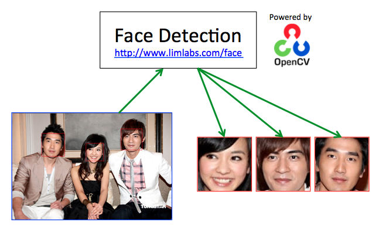

Face Detection
Face detection determines the locations and sizes of faces in a digital image. It can be used in photo management or video surveillance system. Some effective and accurate Face Detection algorithms are realized in OpenCV, such as HAAR cascade classifier.
Face Recognition
Face Recognition is used to automatically identify a person in a digital image and determine the person’s main characteristics, such as age and gender. Some comprehensive Face Recognition algorithms are realized in OpenCV, such as Eigenfaces, Fisherfaces, and Local Binary Patterns Histograms (LBPH).